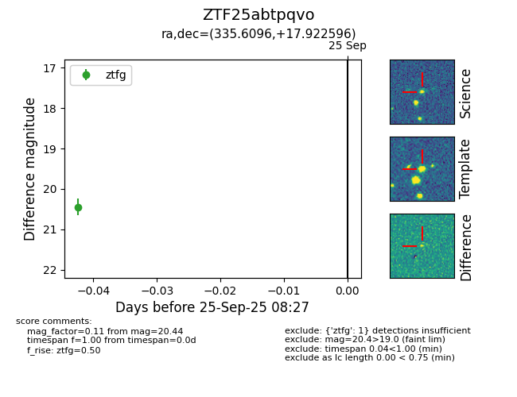

FINK: ZTF25abtpqvo
Lasair: ZTF25abtpqvo
ALeRCE: ZTF25abtpqvo
ZTF25abtpqvo (ztf,fink)
equatorial (ra, dec) = (335.6096,+17.92260)
galactic (l, b) = (80.0073,-32.25817)

last ztfg=20.44
1 ztfg detections